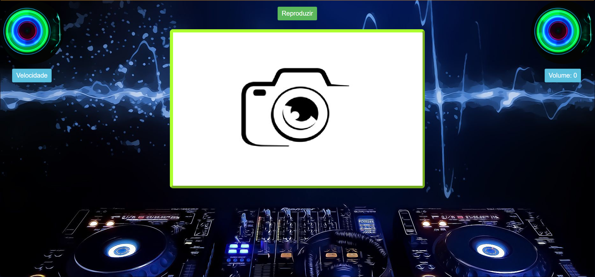
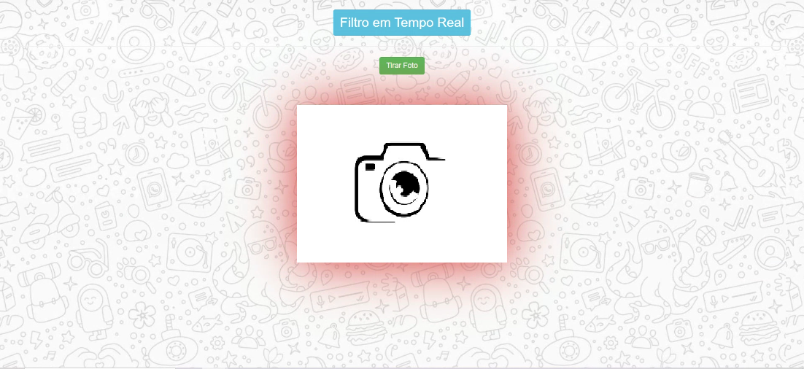

Desenvolvimento WEB e IA
⮜Este site foi o primeiro feito por Murilo e traz informações sobre um youtuber inspirador chamado Dhar Mann e um pouco de seus vídeos.
AcessarEste site foi feito em um trabalho de escola com o objetivo de criar uma empresa vendedora de doces, cujo nome era Confeit. Você encontrará o cardápio e redes sociais da empresa.
Acessar
Esse site serve para monitorar músicas em relação ao volume do áudio e sua velocidade. Requer o uso da câmera para funcionar, para utilizar as mãos para controlar a música.
Acessar
Neste site você pode tirar fotos com um filtro de óculos
Acessar